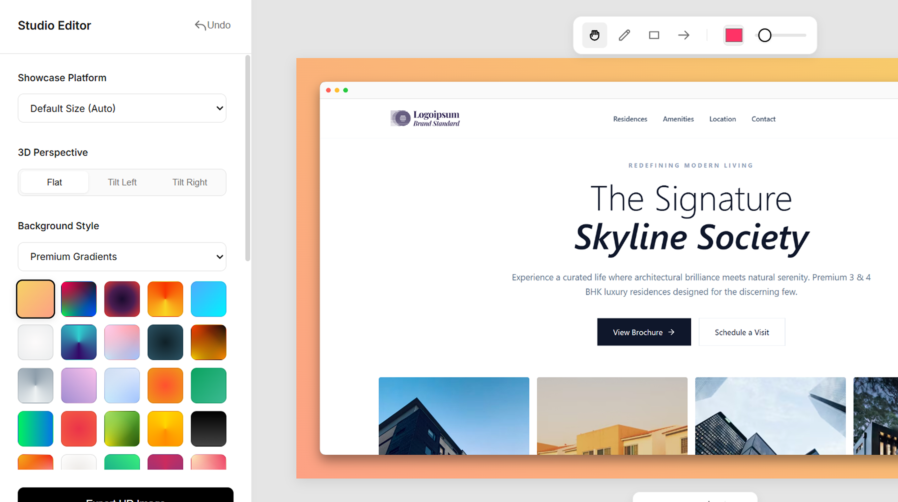
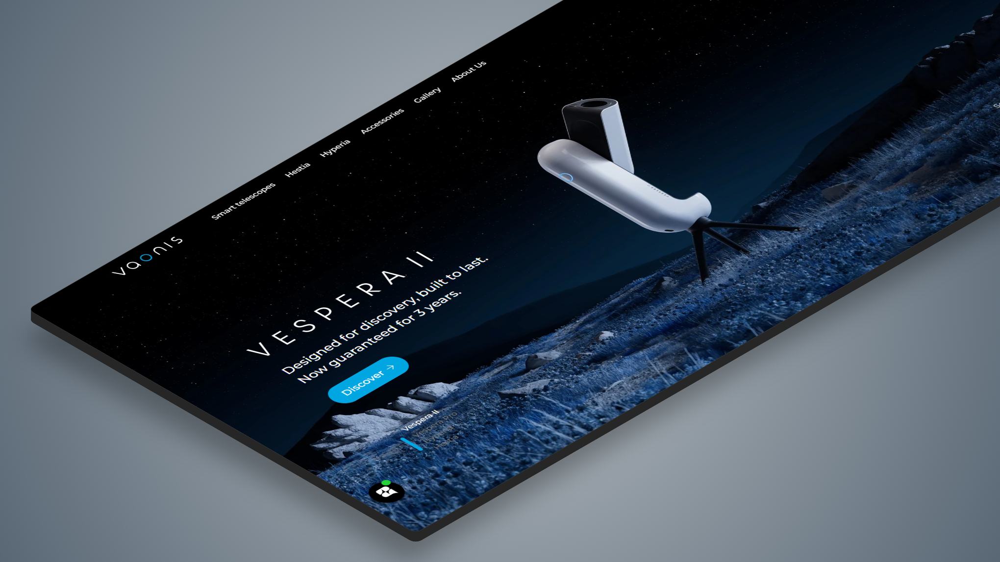
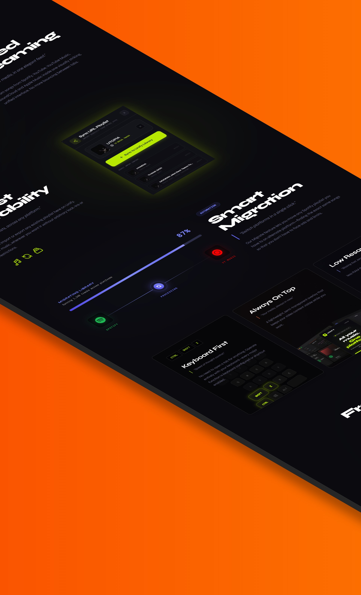
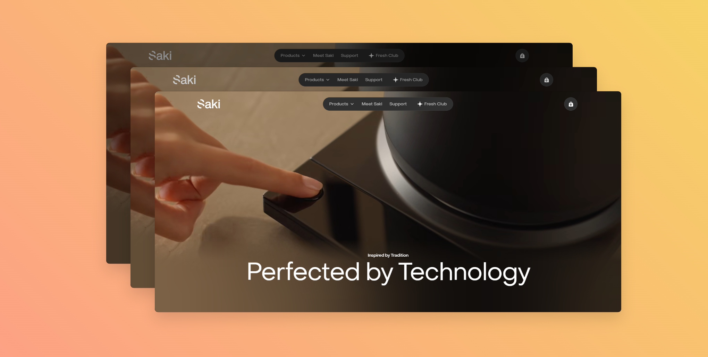
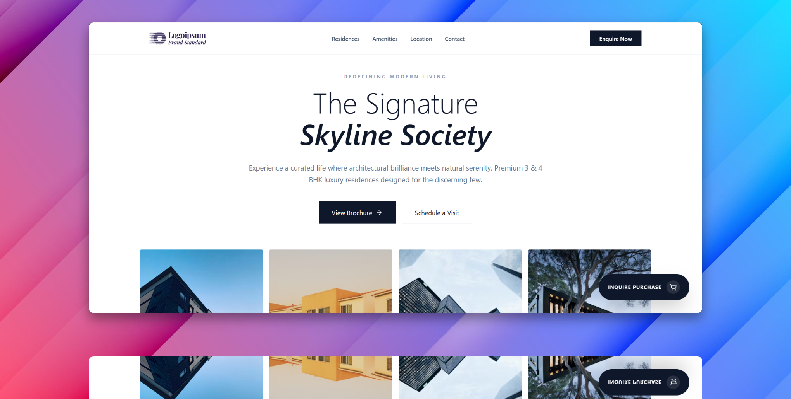
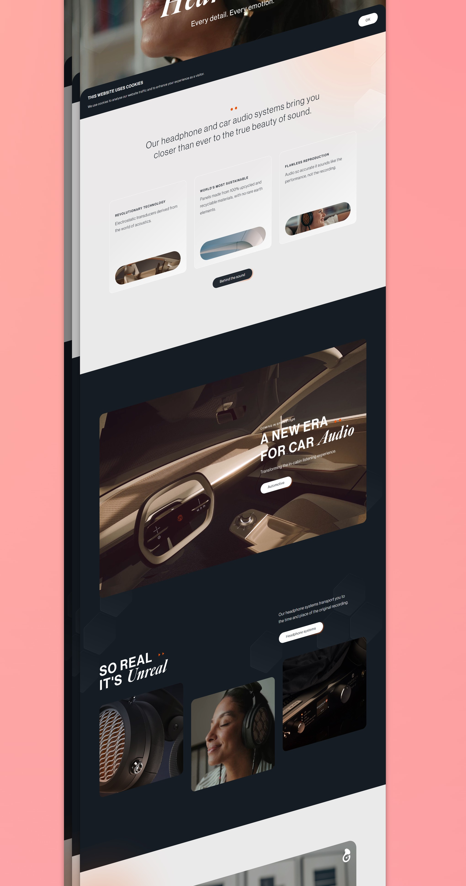

Screenshots that look
professionally designed.
Capture full web pages in absolute 4K fidelity and instantly transform them into elegant product showcases directly within your browser.
Native 4K Captures
Render long-form pages or entire viewports naturally without downscaling. The engine hooks deeply into the page to extract uncompressed geometry natively.
Studio Editor
An embedded infinite canvas. Apply beautiful macOS window frames, smooth gradients, and deep shadows instantly.

Export to Any Platform
Forget manual cropping in Figma. Select your target design platform and our smart framing technology recalculates the geometric boundaries to ensure fully proportional exports.
The Studio in Action
Every detail captured in native 4K. No compromises, just pure clarity for your professional product showcases.





Streamline your captures.
Stop launching heavy design software just to add a nice shadow to your screenshots. Do it directly in your browser.
Install Extension